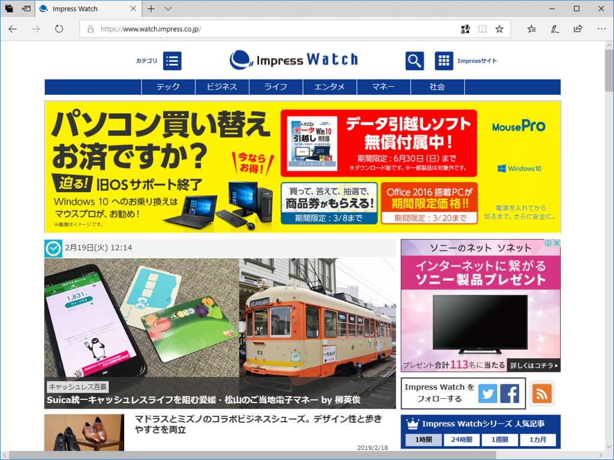

Impress Watch の「キャッシュレス百景」に寄稿しました
公開日：

なんかトップページにババンとと掲出されているのがちょっと照れ臭いのですが……過去に掲載された記事では東京での話が多かった気がするので、ちょっと視点を変えるつもりで愛媛県・松山市でのキャッシュレスライフを軽く書いてみました。
隠れたテーマは グローバル vs ドメスティック でしょうか。
電子マネーを地域通貨的に使おうという動きはたまに見られるのですが、ハイエクが割と好きな僕でもあまり筋のいい話ではないなと思っています。おカネって、いろんなものをつなげる媒介じゃないですか。共同体に閉じようという動きと正反対なものなんですよね。んで、国という単位でみるならば、その根っこは徴税に紐づいている。国際マクロ経済ならばともかく、どんな貨幣だろうがポイントだろうが、最終的には円に換算されて――おもに徴税のためにね――一つになるわけです。だから、電子マネーをバラバラにしたからといって地域経済が守られたり、振興されることはない……たぶん、不便なだけ。いったん可換・比較可能な数値として計量化されてしまえば、そこにどんな想いが込められていようと、それはいずれ捨象され、取引に切り刻まれて経済の海に飲み込まれてしまう。
でも、これだけ電子マネーが乱立するのを見られるのも今だけかなって思うと、それはそれで面白いですよね。市場経済が立ち上がろうとする時代、とくにさまざまな権威がモザイクのようにあった西洋ではいろんな種類の貨幣がアホみたいに乱立していたのを我々は知っているわけですが、ああいうのを目の当たりにできている。いずれは淘汰され、必ずしも一番優れていないものがヘゲモニーを握ることになるんだと思いますが（！）、それが何になるのか、ちょっと興味深くありませんか。
できれば技術的に優れたものに王冠が授けられんことを願うわけですが……それまでは「それは無理筋やろ」っていう試みも生暖かく見守って、火傷をしない程度に関わっていけたら楽しいかなって思っています。いやさ、何が生き残るかだなんて、ほんとのところは誰にもわかんないわけで。あの「マチカ」だって化けないとも限らない――合理性は脇に置いて、ワーッとした盛り上がりがあれば、微レ存。とにかく好きなのを使って、肩入れして、その場だけでも楽しめばいい気もします。
そんな感じ。